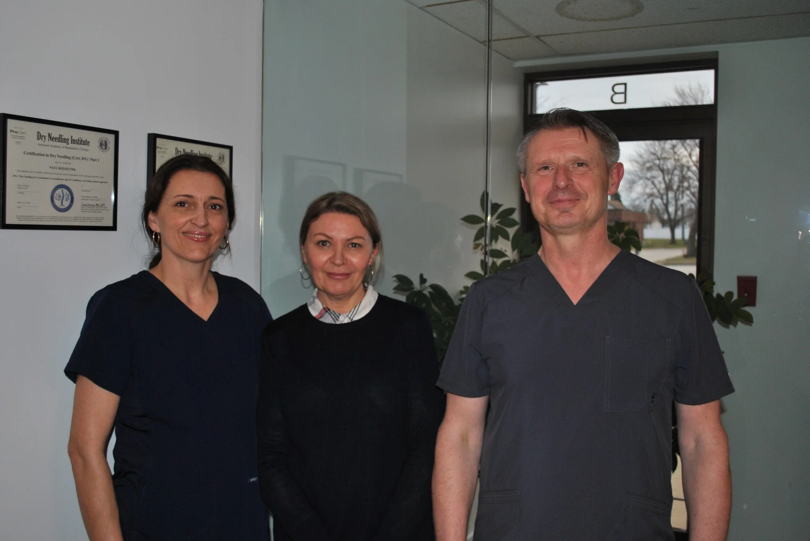

Naprapathic Adjustment
Hands-on care intended to improve mobility, address soft-tissue restriction, and support more comfortable movement.

Doctor of Naprapathy · Glendale Heights, Illinois
Personalized, hands-on naprapathic care focused on mobility, connective tissue, posture, and comfortable movement.
About SpineArc
SpineArc is the naprapathic practice of Paul Rzeszutek, D.N., providing individualized care for musculoskeletal discomfort, restricted movement, and postural strain.
Naprapathy is a hands-on approach centered on connective tissue and the relationships among muscles, joints, and surrounding structures. Care is tailored to the individual and may include manual treatment, movement guidance, and practical recommendations for daily habits.
See how we can help ↗Your Practitioner
Doctor of Naprapathy
Dr. Rzeszutek takes a direct, personal approach to care. Each visit is shaped around the patient's symptoms, movement patterns, day-to-day demands, and goals rather than a one-size-fits-all protocol.
SpineArc is designed to feel like a neighborhood practice should: attentive, straightforward, and focused on helping patients understand what is being addressed and why.
Speak With the OfficeHow We Can Help
Services are selected based on your goals, symptoms, movement patterns, and everyday demands.
Hands-on care intended to improve mobility, address soft-tissue restriction, and support more comfortable movement.
Practical guidance for workstations, repetitive tasks, posture, and movement habits that may contribute to strain.
General nutrition and lifestyle guidance that can complement an overall wellness plan.
What Is Naprapathy?
Naprapathic care looks at how connective tissue, muscles, joints, posture, and movement interact. Treatment may combine manual techniques with individualized guidance intended to support mobility and function.
Care recommendations vary by patient. SpineArc does not use a single treatment plan for every condition or person.
Insurance
Coverage can vary by plan. Please call the office to confirm benefits before your appointment.
Visit SpineArc
SpineArc